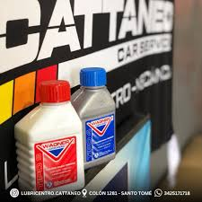
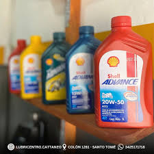
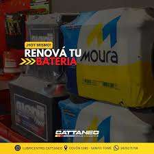

Líquido de Frenos
$7.000
El Líquido Para Frenos Tipo 3 500ml Wagner Lockheed 130024 es un producto de alta calidad, diseñado para garantizar la máxima eficiencia y seguridad en tu vehículo.

Aceite para Moto
$6.000
Shell Advance AX3 es un aceite ideal para ciclomotores y scooters con motores pequeños, que funcionan en caliente y soportan grandes esfuerzos, y que requieren un rendimiento fiable del aceite para tener protección continua.

Batería
$115.000
Moura es una de las mejores baterías del mercado. Con una capacidad de 150 AMP, esta batería es capaz de suministrar una cantidad constante de energía durante un largo período de tiempo, lo que significa que no tendrás que preocuparte por quedarte sin energía en el momento más importante.